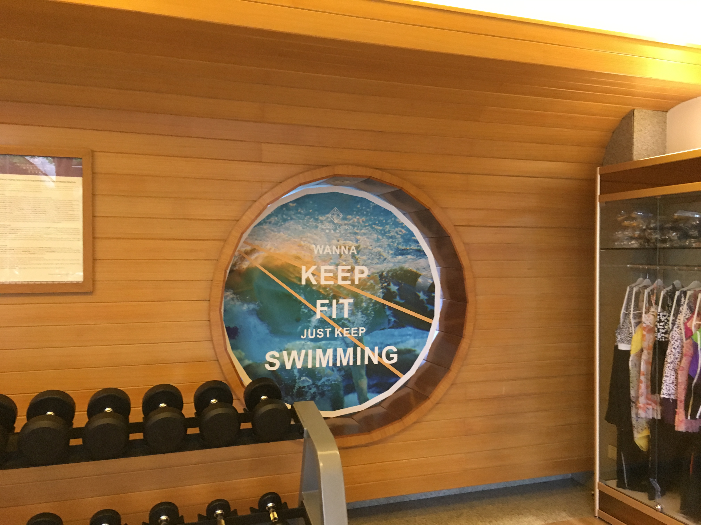
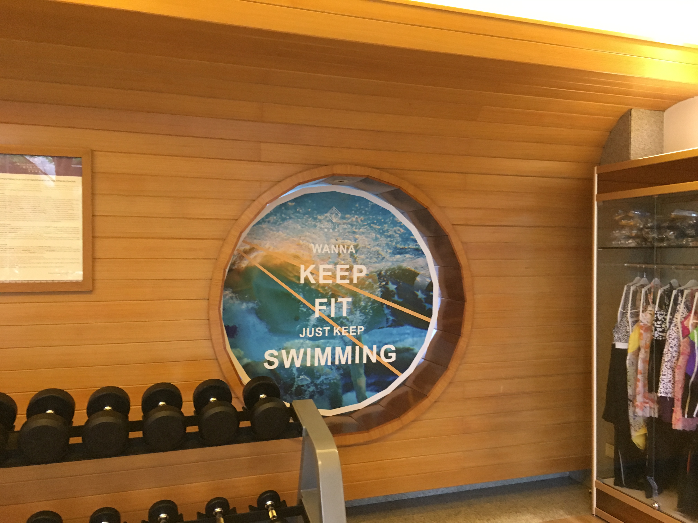
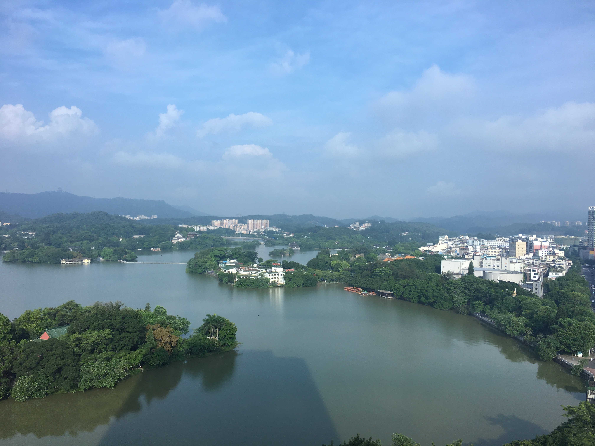

Kande International Hotel, Huizhou
I got to the hotel past 10 at night… and a long flight… makes anyone tired. But there are still entrance pics to the hotel, which was… impressive enough.
Check–in as usual plus extreme document-checking. Then it was to the elevators. No, the stairs were for the second floor, not the only access to elevators...
Upstairs to the hallway.
And to a room that was most definitely filled with cigarette smell. So, someone was definitely smoking here, because this was a smoking room. The fact that this was a smoking room, I didn’t know until after I checked in, and there wasn’t a non-smoking room available because both floors (!) were sold out. Un-freaking-believable. I'll have more of this issue at the end.
Here’s the sole bed (I recall reserving a double…?) and closet (standalone on legs, looks like I could move it if I wanted to, really?).
Here’s the desk. Appreciate the old-style chair?
The couch and two apples. Consumed as a midnight snack.
Be careful which complimentary bottle you open. It may charge you some money.
I’ve never seen a use for both a shower room and a bathtub.
I guess the bathtub is a nice place to relax after a long day. It came with a plastic cover.
Sink was basic enough; I don’t have any reservations about it.
So by 4:30 in the morning, I called housekeeping to complain about the smoke-filled room, and they provided me with this "air filter" that not only did little to help, but required the door to the hallway be open. I don't fault the lady who brought the air filter here, as she said this is all she had (of course she got a generous tip from me, being this was too early in the morning and kind of an outrageous request with a smoking room… of course she tried to decline, of course I didn't let her give it back to me). Instead, I fault the management, and management only, because they clearly didn't have their heads straight with this issue
 Pool was… for recreational only, not for exercise unless you can figure out how lap swim here works.
My camera fogged up... so it was back to the phone.
Pool was… for recreational only, not for exercise unless you can figure out how lap swim here works.
My camera fogged up... so it was back to the phone.
Lots of trees…
The sheer height of the main building of the hotel.
And an outside shower, completely visible to the public without any type of wall or partition. No meaning intended, just showing a picture of the shower. I'd just use this to rinse off, but the one inside to clean up.
Tent/temple-like place. Though I didn’t get a picture of the entrance.
This is where things get interesting. Ramp was… for what? It was to the “back” of the pool, too. It was easily accessible; how would I not have been able to get this picture if there wasn’t any sort of wall, barrier, or any sign saying not to go there? You’d think they’d have some type of barrier separating the ramp after construction… maybe?
Exiting the pool area to the exercise room, it appeared to be manned, with this “feet pool” that I had to hop across because I was wearing shoes.
 

 It was a game room, exercise room, and display case of swimsuits morphed into an exercise room… no
partitions between either unless you count the display case.
It was a game room, exercise room, and display case of swimsuits morphed into an exercise room… no
partitions between either unless you count the display case.
Oh, there’s a walkway back to the elevators, not through the pool.
Ok. Breakfast opened. Here’s the entrance, you’ll have to “check in” here.

 Seating was nice, but it was 6:30. I wonder how things will be at 8:00.
Seating was nice, but it was 6:30. I wonder how things will be at 8:00.


 With a breakfast spread that I could accept, but mostly Chinese selections were offered and not very
many Western options were offered.
With a breakfast spread that I could accept, but mostly Chinese selections were offered and not very
many Western options were offered.
 Finally, the table has a box of napkins. Not easily accessible.
Finally, the table has a box of napkins. Not easily accessible.
I play the piano, so I had the temptation to hop on the piano and play something. It looked like people use it, no? I didn’t.
Coffee machine, no barista. Not the easiest to use.
There was Yakult!
 Now the positives. We must give credit where credit is due. This hotel is not the worst place to be at for a night’s stay. The breakfast selection was mostly Chinese, and a lot of people seemed to enjoy it. The pool and exercise room are good enough for me. Finally, the rooms had the amenities I expected, and surpassed my expectation with the bathtub. If you want to do a “staycation” here for no more than a week, then this is a decent place to be at, but with a massive caveat…
The big negative was about the smoke-filled room. Not everyone smokes, and not the majority smokes. I called the front desk for a different room, but I was told that both floors of non-smoking rooms were full… out of the 12… something, probably more. Seriously??? I know that there's quite a few people who smoke, but definitely not enough to warrant every floor except a few be marked as smoking!
Unfortunately for me, the smoke-filled room was enough to negate all of the positives in this hotel, and I will certainly book away from this location, knowing that there are plenty of other good places to stay. Sad that an International hotel (the name of this hotel) doesn't know how to distribute the number of rooms correctly, and doesn't bother figuring out a way to deal with this issue. When checking out at the front desk, I asked them about this issue and told them I got caught up with it, but they couldn't have been more indifferent about this and clearly showed that they were fine with it.